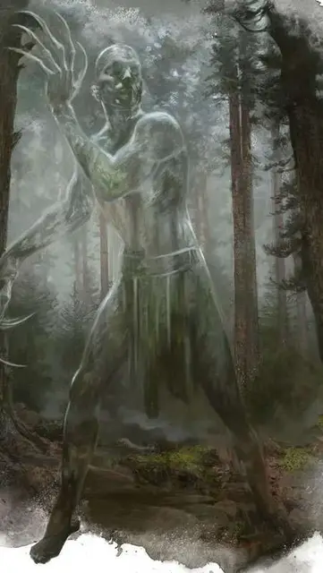

Скаллк
Skulk
Средний Гуманоид, хаотично-нейтральный

Класс Доспеха 14
Хиты 18 (4к8)
Скорость 30 футов
| мод | спас | ||
|---|---|---|---|
| СИЛ | 6 | −2 | −2 |
| ЛОВ | 19 | +4 | +4 |
| ТЕЛ | 10 | +0 | +2 |
| мод | спас | ||
|---|---|---|---|
| ИНТ | 10 | +0 | +0 |
| МДР | 7 | −2 | −2 |
| ХАР | 1 | −5 | −5 |
Навыки Скрытность +8
Иммунитет к урону излучение
Иммунитет к состояниям ослепление
Чувства тёмное зрение 120 футов, пассивное Восприятие 8
Языки Общий
Опасность 1/2 (100 опыта)
Бонус мастерства +2
Среда обитания Болото, Город, Лес, Побережье, Подземье
Особенности
Несовершенная невидимость. Скаллк невидим. Такую невидимость можно развеять тремя способами:
• Скаллк появляется в виде серого гладкокожего гуманоида, если его отражение можно увидеть в зеркале или другой отражающей поверхности.
• Скаллк появляется в виде тусклого полупрозрачного силуэта под светом свечи, сделанной из жира, содранного из трупа неизвестной личности.
• Дети гуманоидов младше 10 лет могут видеть невидимого скаллка.
Не оставляющий следов. Скаллк не оставляет следов, по которым его можно было бы отследить или понять в какую сторону он движется.
Действия
Когти. Рукопашная атака оружием: +6 к попаданию, досягаемость 5 футов, одна цель. Попадание: 6 (1к4 + 4) рубящего урона. Если скаллк совершает броски атаки с преимуществом, то цель также получает дополнительных 7 (2к6) урона некротической энергией.
Описание
Скаллки – это бездушные оболочки потерявшихся путешественников, блуждающих по серым пустошам Царства Теней до тех пор, пока не потеряли самоощущение. Они настолько лишены собственной личности, что стали невидимыми. Только дети могут видеть скаллков без помощи зеркал или специальной свечи. В тех редких случаях, когда скаллк становится видимым, он предстаёт в виде серого, безликого, безволосого гуманоида.
Призванные слуги. Скаллк может быть призван из Царства Теней посредством ритуала. Если существу предоставляется часть личности призывающего, скаллк обязан подчинятся командам призывателя на протяжении 30 дней. Если скаллк видим, сообразительный наблюдатель может определить того, кто призвал скаллка, поскольку скаллк всегда имеет некое сходство со своим хозяином.
Жестокие и безалаберные скаллки выполняют приказы наиболее свирепым образом. Призванный скаллк не вернётся в Царство Теней пока не умрёт, и поэтому у него есть мотивация бросать себя в самую гущу резни и суматохи.
Пустая жизнь. После убийства кого-либо в материальном мире, скаллк иногда принимает молчаливое подражание жизни этой личности. В крайних случаях, скалки вторгались в деревни, убивали всех обитателей, и превращали их в подобия городов призраков, где ежедневно готовили безвкусную еду, вывешивали на сушку бесцветную сухую одежду, а домашний скот перегоняли из загона в загон, пока животные не умирали от голода.